From the fastest runners to the fluffiest lap dogs, PurrPets helps you identify the perfect "bread" for your home.
| Breed Name | Photo | Traits/Specialty |
|---|---|---|
| Bulldog | 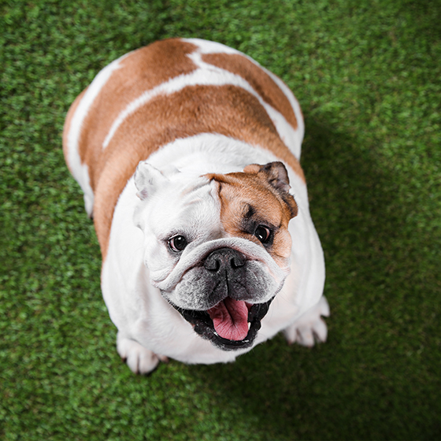 |
Distinctive "sourmug" face, muscular build, and gentle, affectionate nature, making them excellent family companions. |
| Alaskan malamute | 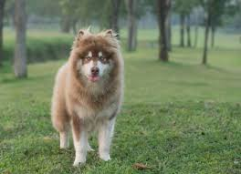 |
A loyal and bold companion. |
| Airedale terrier | 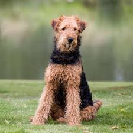 |
They are loyal, friendly, curious, energetic dogs who are fun loving, eager and tireless. |
| Pug | 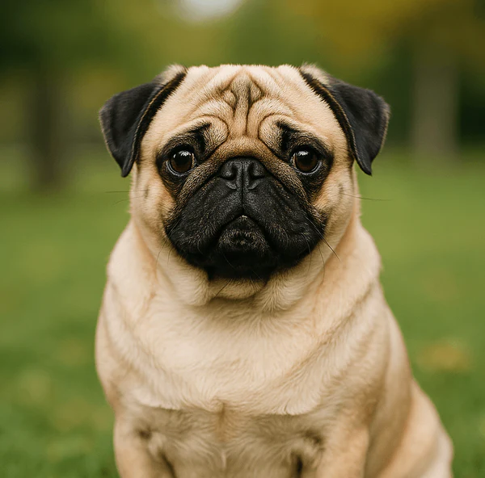 |
They are best known for their wrinkly, flat faces (brachycephalic), large, dark, expressive eyes, and curly tails. |
| French Bulldog | 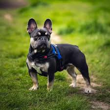 |
Playful, adaptable, and great for city living. |
| Rottweiler | 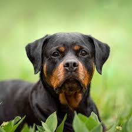 |
Known for its powerful build, extreme loyalty, and steady, confident temperament. |
| Affenpinscher | 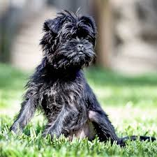 |
They are confident, fearless, and often comical companions that were originally bred to hunt rats in kitchens and stables. |
| Australian Cattle Dog | 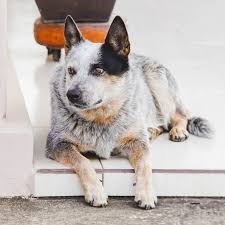 |
Extreme intelligence, loyalty, and boundless energy, these dogs are highly trainable. |
| Border Collie | 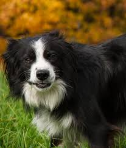 |
Highly intelligent, energetic workaholics originally bred for herding sheep on the British borderlands. |
| American Staffordshire Terrier | 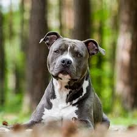 |
A muscular, intelligent, and confident breed known for its deep loyalty to family and "velcro" personality. |
| Australian Shepherd | 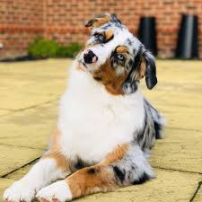 |
Extreme intelligence and versatility, they are characterized by an intense work drive, a strong desire to please, and striking, varied coat colors. |
| Bichon Frisé | 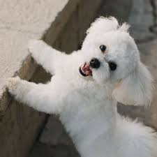 |
small, sturdy, and hypoallergenic dog breed renowned for its cheerful, affectionate, and charming personality. |
If you want a dog that runs with you, a Border Collie is best. If you want a dog that naps with you, a Frenchie or Shih Tzu is the way to go!